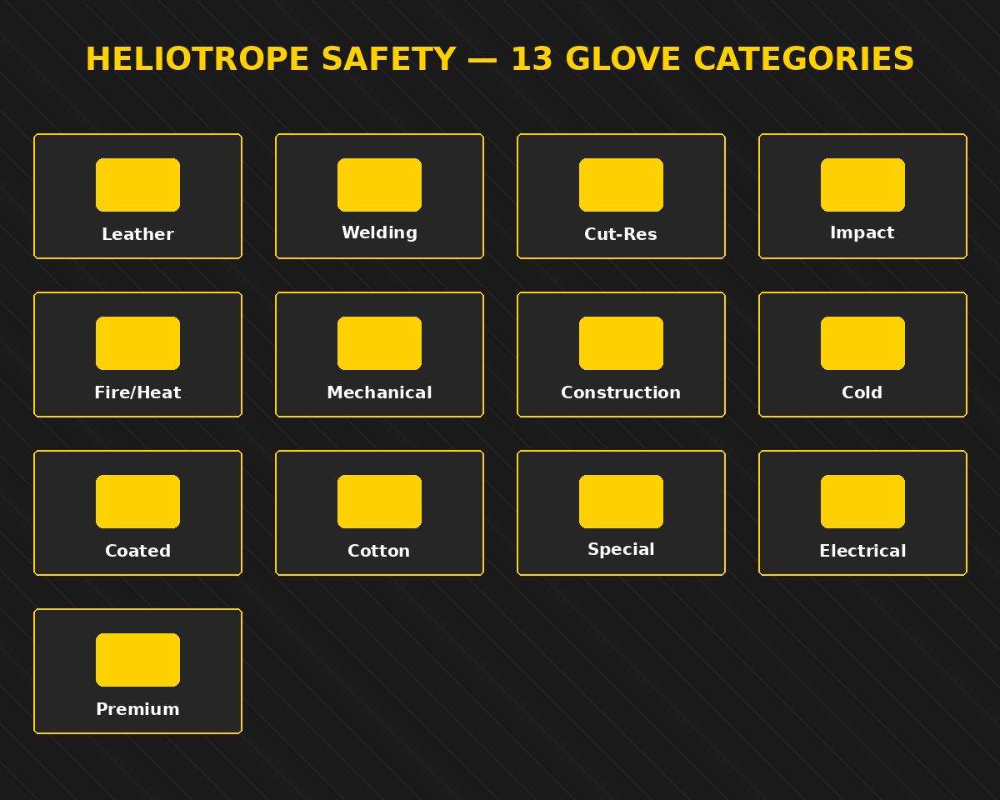

PU-Coated Precision Gloves
13/15-gauge nylon liners with thin PU palms for assembly, inspection and clean handling.
Enquire →Seamless-knit coated gloves in every palm chemistry and gauge, engineered for grip, abrasion life and chemical splash across general industry.
Coated fabric gloves are the volume backbone of industrial hand protection, and precision coating is a core competency at Heliotrope Safety. We knit seamless liners in nylon, polyester, cotton and HPPE across 10- to 18-gauge, then apply the exact coating the task demands — nitrile, latex, polyurethane, PVC or hybrids — on automated dipping lines that hold coating weight consistent pair to pair.
Coating chemistry is chosen for the environment: PU for dry precision, foam and sandy nitrile for oily grip, crinkle latex for wet surfaces, and full or double dips for liquid and chemical splash resistance. This is our most configurable, most scalable category — the same glove can be tuned across dozens of grip, cut and cuff combinations for a distributor's complete general-handling range.
Every model below is produced in-house and available for OEM, ODM and private-label programs. Configure grip, lining, cuff and branding to your specification.

13/15-gauge nylon liners with thin PU palms for assembly, inspection and clean handling.
Enquire →
The everyday workhorse — breathable foam-nitrile palms for dry and lightly oily general work.
Enquire →
Aggressive sandy texture for maximum grip on oily metal, glass and wet components.
Enquire →
Wet-grip latex palms for construction, agriculture and slippery-surface handling.
Enquire →Full nitrile or PVC dips for liquid, oil and light chemical splash resistance.
Enquire →PVC-dotted cotton knits for economical light-duty grip and glass handling.
Enquire →We control construction at every stage — material selection, knitting or cutting, coating or sewing, and inspection — so performance is engineered in, not hoped for.
Every coated fabric gloves model is manufactured and tested to the applicable European and North American standards, with conformity documentation supplied per shipment.
Indicative specification range across the category. Exact values are confirmed per model on the datasheet supplied with your quotation.
| Parameter | Specification |
|---|---|
| Coating chemistry | Nitrile, latex, PU, PVC, hybrid |
| Coating style | Palm, 3/4, full, double-dip |
| Liner gauge | 10, 13, 15, 18 |
| Liner fibre | Nylon, polyester, cotton, HPPE |
| Grip texture | Smooth, foam, sandy, crinkle, dotted |
| Cut option | Up to ANSI A6 on HPPE liners |
| Sizes | 6 (XS) – 11 (XXL) |
| Standard MOQ | 1,500 pairs per model |
Coated Fabric Gloves from Heliotrope Safety protect crews across demanding sectors worldwide. Explore our industries overview for sector-specific programs.
OEM / ODM & private labelTurn our coated fabric gloves into your own product line with full private-label and OEM support.
Coated fabric gloves ship at a 1,500-pair minimum per model — the lowest per-pair cost in our catalogue at volume. Multi-coating, multi-gauge assortments blend into a single container efficiently for distributor programs.
Sampling, blended container loads and rolling call-off programs are all supported. Talk to us about your forecast and we will structure the most cost-effective program.
Standard minimum order for this category, per model and colourway.
Typical production lead time after sample approval, model dependent.
Flexible Incoterms and blended container loads to your port.
CE, test reports and REACH conformity supplied per shipment.
Technical and commercial answers for buyers specifying coated fabric gloves at volume.
Send us your specification and volumes. Our technical team replies with a factory-direct quotation, typically within one business day.
Part of a complete 13-category glove program. Return to the glove range hub or browse related categories below.
Factory-direct coated fabric gloves for distributors and brands worldwide. Send your specification and volumes for a same-day-quality response.